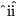

Operations between two images or two spectra:
In this form, the command word is followed by the numbers of the buffers
holding the images. Examples are

Note that the first buffer listed is the one modified by the operation.
The FLAT word is used in the DIVIDE command to re-scale the division by the mean of the second image, thus preserving the mean of the first buffer. This is typically used when dividing raw images by a flat field. NOTE: The mean of the second image must have previously been calculated by the MN command!
Operations between images and constants:
In this form, there is only one buffer specification on the command line.
The word CONST= (or C=) is used to specify the constant to be used.
Combined image and constant operations:
The first two forms of these commands may be combined, thus allowing you to
simultaneously operate on two images and a constant.
Remarks:
In two-image arithmetic, only those pixels common to the two images are changed by the operation. The size of the destination image is not changed by the operation. The DR= and DC= keywords only apply to two-image arithmetic and specify row and column offsets between the two images. The sense of the shift is shown in the following example: dest(C+DC,R+DR) = dest(C+DC,R+DR) + other(C,R).
BOX limits the operation to those pixels in the destination image which are in the specified box.